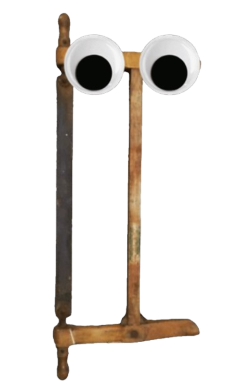

Willkommen bei der Schreinerei Meier im Internet!
Wir sind seit vielen Jahren darauf spezialisiert, alle Kundenwünsche zu erfüllen. In unserer Werkstatt produzieren wir selbst – mit Holz aus regionaler, nachhaltiger Forstwirtschaft.
Die Anfänge unserer Firma reichen bis ins Mittelalter zurück, als Horst Holzmann begann, seine bisher für den Eigenbedarf hergestellten Möbel auch auf dem Markt der nächsten Stadt zu verkaufen.
Sein Sohn führte diese Tradition fort und nach ihm noch viele weitere Kinder und Kindeskinder. Heute führt Harry Meier den Betrieb in der 15. Generation und arbeitet bereits seinen Enkel als Nachfolger ein.
